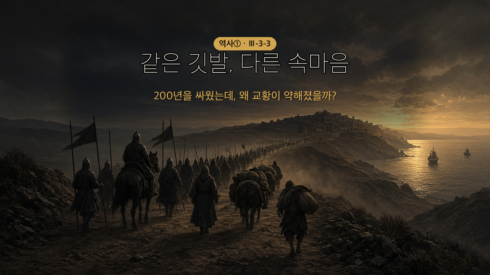
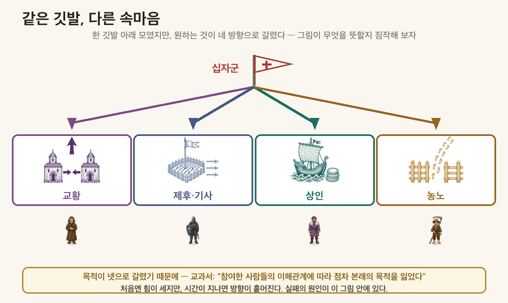
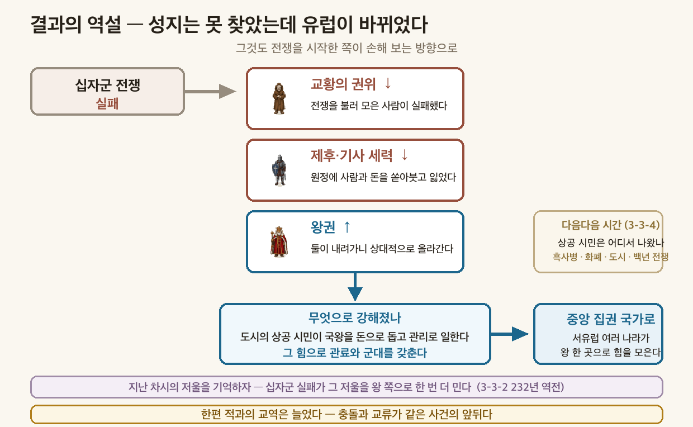

성지를 되찾자며 200년을 싸웠는데, 왜 교황이 약해졌을까?
셀주크 튀르크 — 11세기경 중앙아시아에서 일어난 유목 민족. 바그다드를 정복하고 아바스 왕조의 칼리프에게서 술탄 칭호를 얻어 이슬람 세계를 이끌었다.
클레르몽의 호소 (1096~) — 교황 우르바누스 2세가 클레르몽에서 종교 회의를 열어 "성지 예루살렘을 되찾자"고 호소했다.
같은 깃발, 다른 속마음 — 교과서 삽화가 네 사람의 말풍선으로 보여 주는 대목.
| 누가 | 진짜 원한 것 |
|---|---|
| 교황 | 동·서 교회를 통합해 교황권 강화 |
| 기사 | 더 넓은 땅 |
| 상인 | 동방과 직접 교류해 부 |
| 농노 | 신분의 자유 |
결과의 역설 — 성지는 못 찾았는데 유럽이 바뀌었다. 그것도 전쟁을 시작한 쪽이 손해 보는 방향으로.
교황 권위 ↓ · 제후·기사 세력 ↓ → 왕권 ↑ → 중앙 집권 국가로

- 십자군 전쟁이 일어난 배경과 전개 과정을 설명할 수 있다.
- 십자군 전쟁 이후 이슬람 세계와 크리스트교 세계의 교류와 변화를 살펴볼 수 있다.
| 낱말 | 한자 뜯어보기 | 문장 속에서 |
|---|---|---|
| 성(聖, 거룩) + 지(地, 땅) | "예루살렘은 세 종교의 성지다." | |
종교에서 거룩하게 여기는 땅 聖 → 성인 · 성경 · 신성 / 地 → 지도 · 지구 · 토지 | ||
| 아랍어 sultan = '권력·권위' — 힘 자체를 가리키던 말이 그 힘을 쥔 사람의 칭호가 되었다 | "셀주크 튀르크는 칼리프에게 술탄 칭호를 받았다." | |
이슬람 세계의 정치 지배자 한자어가 아니라 아랍어 — 힘을 뜻하던 말이 그 힘을 쥔 사람의 칭호가 되었다 | ||
| 제(諸, 여럿) + 후(侯, 제후) | "제후와 기사들이 전쟁에 참여했다." | |
왕 아래에서 땅을 나눠 받아 다스리는 사람 諸 → 여럿 · 侯 → 제후. ⚠️ 이 두 글자는 다른 낱말에 거의 안 쓰인다 — 통째로 외우는 편이 빠른 드문 경우 | ||
| 중앙 + 집(集, 모을) + 권(權, 권력) | "왕권이 세지며 중앙 집권 국가로 나아갔다." | |
힘이 왕(중앙) 한 곳에 모이는 것 集 = 모은다 → 수집 · 집합 · 모집 · 그리고 집권(힘을 한곳에 모은다) / 權 → 인권 · 권리 (사회 시간의 그 권) | ||
💡 오늘 딱 두 개만 잡자 — 성지(왜 싸웠나)와 중앙 집권(무엇이 바뀌었나).
📕 교과서 97쪽 마지막 문단 펴고 채우기 · 배정 시간 3분
11세기경 중앙아시아의 유목 민족인 셀주크 튀르크가 성장했다. 이들은 바그다드를 정복하고, 아바스 왕조의 칼리프에게서 ①의 칭호를 얻으며 이슬람 세계를 이끌었다. 서아시아와 중앙아시아를 아우르는 대제국을 세운 이들은, 영토를 넓히는 과정에서 크리스트교 세계와 마찰을 빚었다.
🎙️ 술탄은 아랍어로 '권력'이야. 이슬람 세계에는 원래 종교 지도자인 칼리프가 있었는데, 셀주크는 그 칼리프에게서 정치적 지배자 칭호를 받은 거야. 종교의 권위는 칼리프에게 남기고 실제 힘은 자기가 가진 셈이지. 지난 차시에서 교황과 황제가 이 문제로 200년을 싸웠던 것과 견줘 보면 재미있어.
📕 교과서 98쪽 첫 문단 펴고 채우기 · 배정 시간 4분
11세기 후반, 셀주크 튀르크가 성지 ②을 점령하고 비잔티움 제국을 위협했다. 다급해진 비잔티움 황제는 교황에게 도움을 요청했다. 교황 우르바누스 2세는 클레르몽에서 종교 회의를 열어 외쳤다 — 이슬람 세력에게서 성지를 되찾자!
⚠️ 방아쇠는 두 가지다 — 예루살렘 점령 하나만으로는 전쟁이 안 났어. 비잔티움 황제의 요청이 있어야 교황이 나설 명분이 생겼지.
💡 교황의 말 한마디에 유럽 전체가 움직였다는 것 자체가 교황권 절정기(3-3-2)의 증거야.
📕 교과서 98쪽 삽화 펴고 보기 · 배정 시간 6분
🎙️ 여기가 오늘의 핵심이야. 교과서 삽화를 잘 봐 — 사람들 머리 위 말풍선이 다 달라. 같은 전쟁에 모였는데 원하는 게 제각각이었던 거지. 요즘으로 치면, 같은 모둠 과제에 모였는데 누구는 성적, 누구는 친구, 누구는 그냥 재미 때문인 것과 비슷해.

→ 목적이 다른 사람들이 모이면? 처음엔 힘이 세지만, 시간이 지나면 방향이 흩어진다. 이게 십자군의 운명을 갈랐다.
📕 교과서 98쪽 가운데 펴고 채우기 · 배정 시간 3분
십자군 전쟁은 200여 년 동안 여러 차례 일어났다. 제1차 원정 때는 예루살렘을 점령하기도 했다. 그러나 참여한 사람들의 ③에 따라 점차 본래 목적을 잃었다. 결국 성지를 회복하지 못한 채 전쟁은 끝났다.
⚠️ OX 단골 — "제1차 원정에서 예루살렘을 되찾았으니 목적을 이룬 것"이 아니다. 되찾았다가 다시 잃었고, 교과서는 "결국 성지를 회복하지 못하고"로 끝맺는다.
📕 교과서 98쪽 마지막 문단 펴고 채우기 · 배정 시간 5분
🎙️ 반전은 지금부터야. 전쟁은 실패했는데, 유럽은 완전히 바뀌었거든. 그것도 전쟁을 시작한 사람이 손해 보는 방향으로.
전쟁을 이끈 ④의 권위는 떨어졌고, 참여했던 제후와 기사의 세력도 약해졌다. 반면 ⑤권은 상대적으로 강해져, 서유럽 여러 나라가 중앙 집권 국가로 나아갔다.

한편 동쪽에서는 — 셀주크 튀르크도 전쟁의 충격으로 수도를 옮겼고, 국력이 약해져 13세기 중반 몽골군의 침입으로 쇠퇴했다.
📕 교과서 99쪽 + 옆쪽 작은 글씨 펴고 채우기 · 배정 시간 6분
전쟁 중에 돈을 번 사람들이 있었다. 유럽 상인들은 배로 십자군을 성지에 데려다주고, 돌아올 때 아시아의 특산물을 싣고 와 유럽에 팔았다. 염료·비단·향신료 같은 사치품을 찾는 사람이 늘면서 유럽의 시장이 활기를 띠었다.
싸운 상대편도 돈을 벌었다. 셀주크 튀르크는 동서양을 잇는 중계 무역으로 이익을 얻었다. 항구 도시와 비단길의 주요 도시에 국제 시장을 열었고, 교역로 곳곳에 상인 숙소를 세워 안전을 보장하며 무역을 장려했다.
전쟁이 끝난 뒤 두 세계의 교역은 더 활발해졌고, ⑥ 무역권이 크게 성장했다. 베네치아·제노바·피사 같은 연안 도시가 번성했고, 이베리아반도와 콘스탄티노폴리스는 학문과 기술이 오가는 창구가 되었다. 이 길을 타고 비잔티움의 고전 문화, 이슬람 세계의 자연 과학, 중국의 제지술이 유럽에 들어왔다.
🎙️ 여기가 이 차시에서 제일 이상한 대목이야. 죽이겠다고 200년을 싸웠는데, 그 싸움이 만든 뱃길로 물건과 책이 오갔어. 심지어 적이었던 셀주크가 상인들 재워 주는 숙소까지 지었대. 미워하면서도 서로에게서 얻어 갔다는 것 — 이게 충돌과 교류가 같은 사건의 앞뒤라는 말의 뜻이야.
그리고 여기 심긴 씨앗이 두 차시 뒤에 열매를 맺어. 베네치아 상인들이 벌어들인 그 돈이 르네상스를 후원하는 돈이 되거든.
아래 말이 누구의 속마음일지 연결해 보자. (교황 / 기사 / 상인 / 농노)
| 속마음 | 누구? |
| "동방과 직접 교류해서 부자가 되어야지." | |
| "신분의 자유를 얻을 테야." | |
| "동·서 교회를 통합하면 내 권위가 더 강해질 거야." | |
| "더 넓은 땅을 손에 넣을 기회야." |
| 번호 | 문장 | O/X |
| 1 | 십자군 전쟁의 직접적 계기는 셀주크 튀르크의 예루살렘 점령과 비잔티움 제국의 요청이었다. | |
| 2 | 십자군 전쟁은 제1차 원정에서 예루살렘을 되찾은 뒤 목적을 이루고 끝났다. | |
| 3 | 십자군 전쟁 이후 교황의 권위는 떨어지고 왕권은 상대적으로 강해졌다. |
십자군 전쟁은 성공일까, 실패일까? 답은 누구의 입장에서 보느냐에 따라 달라진다.
아래 세 사람 중 하나를 골라, 그 입장에서 십자군 전쟁을 평가하는 글을 써 보자. (교황 / 베네치아 상인 / 예루살렘에 살던 이슬람교도)
제4차 십자군(1202~1204)은 성지로 가지 않고 같은 크리스트교 국가인 비잔티움 제국의 수도 콘스탄티노폴리스를 약탈했다.
성지 회복을 내걸었던 십자군이 왜 같은 종교의 도시를 공격했을까? 3단계에서 배운 참여자들의 서로 다른 목적과 연결해 설명해 보자.